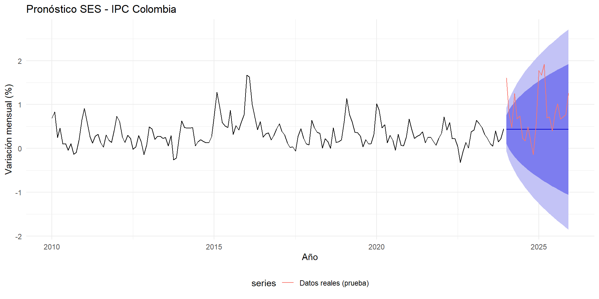
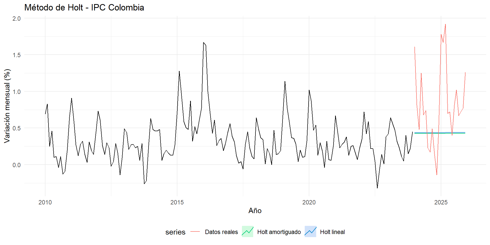
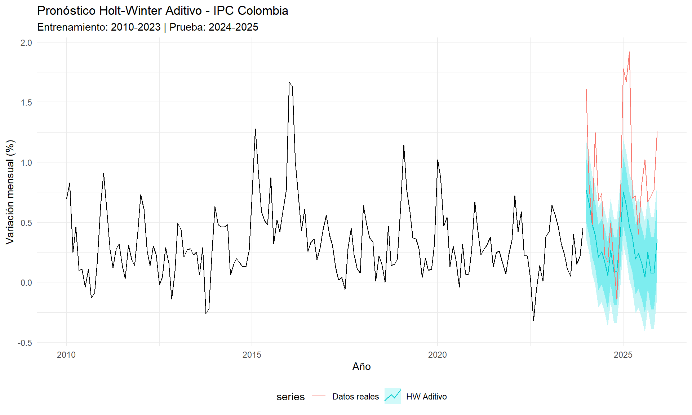
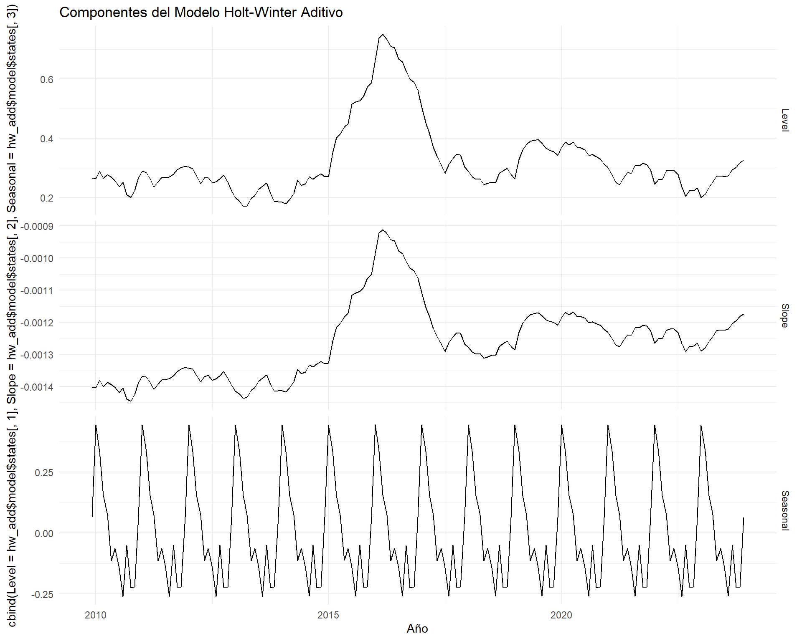
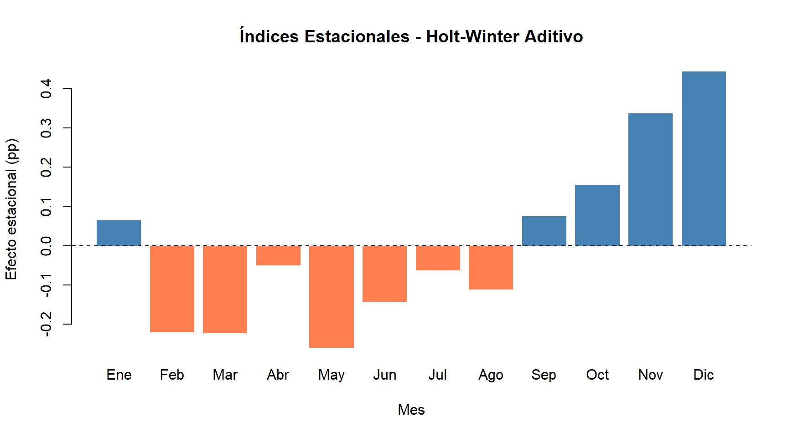
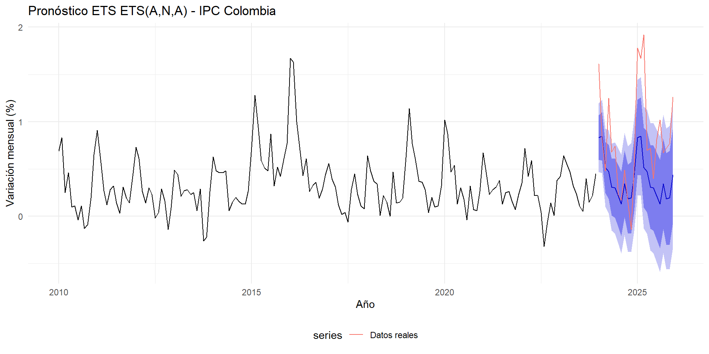
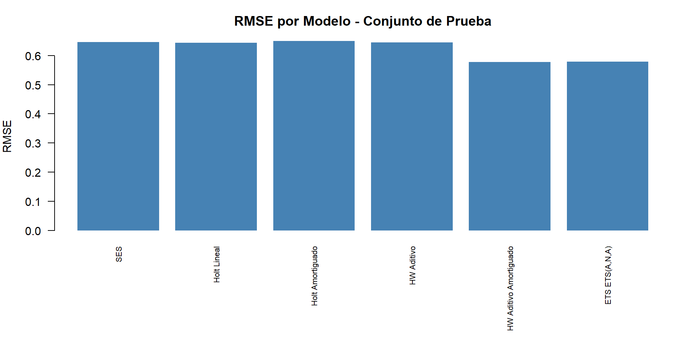
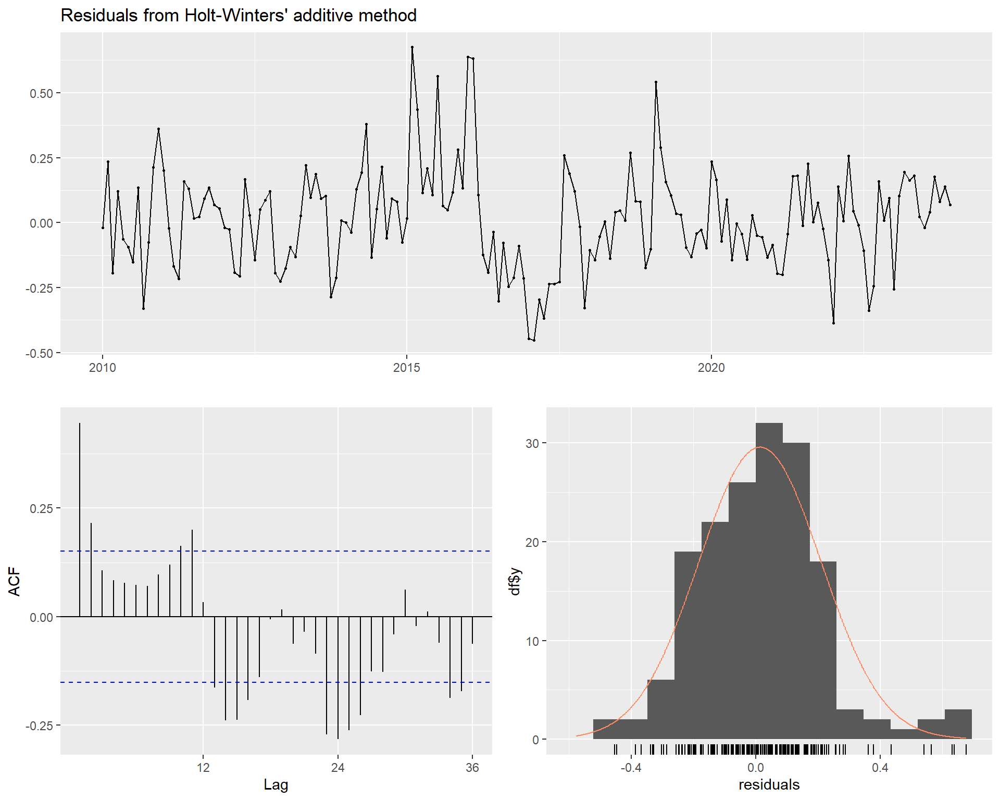
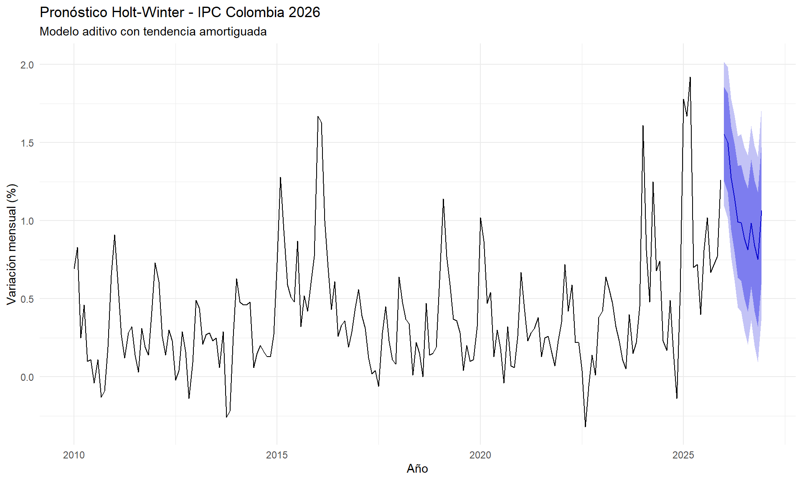
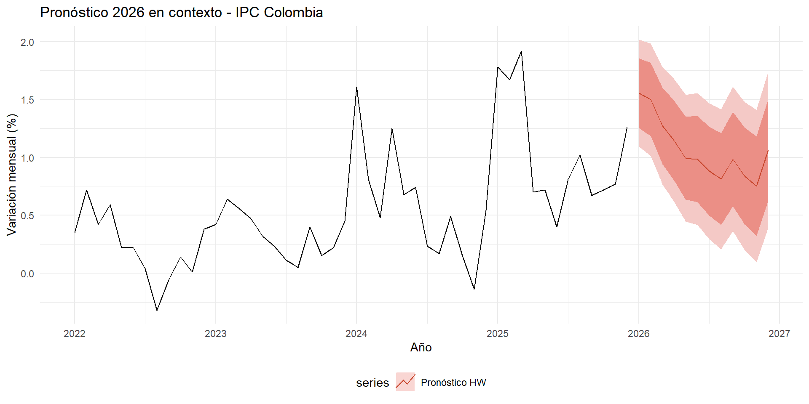

Capítulo 3 Suavizamiento Exponencial y Método de Holt-Winter
En este capítulo se aplican las técnicas de suavizamiento exponencial a la serie de variación mensual del IPC de Colombia. Se parte del suavizamiento exponencial simple, se avanza hacia el método de Holt (doble) y finalmente se implementa el método de Holt-Winter (triple), que incorpora tendencia y estacionalidad. En cada caso se justifican los procedimientos y se evalúa la calidad del pronóstico.
3.1 Fundamento teórico
El suavizamiento exponencial es una familia de métodos de pronóstico que asignan pesos decrecientes a las observaciones pasadas. A diferencia del promedio móvil (donde todos los pesos son iguales dentro de la ventana), aquí las observaciones más recientes reciben mayor ponderación, lo cual permite que el modelo se adapte más rápidamente a cambios en la serie.
La familia se compone de tres niveles:
- Suavizamiento Exponencial Simple (SES): Estima únicamente el nivel de la serie. Utiliza un parámetro \(\alpha\) (entre 0 y 1). Valores de \(\alpha\) cercanos a 1 dan más peso a las observaciones recientes.
- Método de Holt (doble): Extiende el SES al incorporar una ecuación de tendencia con un parámetro adicional \(\beta\). Permite capturar series con tendencia lineal.
- Método de Holt-Winter (triple): Agrega una tercera ecuación para la estacionalidad, con parámetro \(\gamma\). Puede ser aditivo (cuando la amplitud estacional es constante) o multiplicativo (cuando la amplitud estacional crece con el nivel de la serie).
3.2 Preparación de los datos
Cargamos las librerías necesarias y reconstruimos la serie temporal del IPC:
library(forecast)
library(ggplot2)
library(zoo)
# Datos: Variación mensual del IPC Colombia (2010-2025)
ipc_data <- c(
0.69, 0.83, 0.25, 0.46, 0.10, 0.11, -0.04, 0.11, -0.13, -0.09, 0.19, 0.65,
0.91, 0.60, 0.27, 0.12, 0.28, 0.32, 0.14, 0.03, 0.31, 0.19, 0.14, 0.42,
0.73, 0.61, 0.26, 0.14, 0.30, 0.23, -0.02, 0.04, 0.29, 0.16, -0.14, 0.09,
0.49, 0.44, 0.21, 0.27, 0.28, 0.23, 0.25, 0.06, 0.29, -0.26, -0.22, 0.26,
0.63, 0.48, 0.46, 0.46, 0.48, 0.06, 0.15, 0.20, 0.16, 0.13, 0.13, 0.27,
0.73, 1.28, 0.94, 0.59, 0.51, 0.48, 0.87, 0.32, 0.52, 0.42, 0.60, 0.77,
1.67, 1.63, 1.00, 0.70, 0.43, 0.61, 0.26, 0.33, 0.36, 0.19, 0.29, 0.44,
0.56, 0.39, 0.31, 0.12, 0.02, 0.04, -0.06, 0.28, 0.45, 0.23, 0.11, 0.08,
0.64, 0.48, 0.37, 0.34, 0.01, 0.22, 0.15, 0.00, 0.47, 0.14, 0.15, 0.19,
0.62, 1.14, 0.77, 0.59, 0.37, 0.36, 0.28, 0.04, 0.20, 0.10, 0.11, 0.32,
1.02, 0.87, 0.47, 0.54, 0.13, 0.30, 0.18, -0.04, 0.32, 0.07, 0.06, 0.26,
0.67, 0.44, 0.23, 0.28, 0.31, 0.38, 0.13, 0.25, 0.26, 0.16, 0.07, 0.23,
0.35, 0.72, 0.42, 0.59, 0.22, 0.22, 0.04, -0.32, -0.06, 0.14, 0.01, 0.38,
0.42, 0.64, 0.56, 0.47, 0.32, 0.23, 0.11, 0.05, 0.40, 0.15, 0.22, 0.45,
1.61, 0.81, 0.48, 1.25, 0.68, 0.74, 0.23, 0.17, 0.49, 0.15, -0.14, 0.54,
1.78, 1.67, 1.92, 0.70, 0.72, 0.40, 0.81, 1.02, 0.67, 0.72, 0.77, 1.26
)
ipc_ts <- ts(ipc_data, start = c(2010, 1), frequency = 12)Antes de aplicar los métodos de suavizamiento, separamos la serie en un conjunto de entrenamiento (2010–2023) y uno de prueba (2024–2025), lo que nos permitirá evaluar la capacidad predictiva de cada modelo:
# Separar en entrenamiento y prueba
ipc_train <- window(ipc_ts, end = c(2023, 12))
ipc_test <- window(ipc_ts, start = c(2024, 1))
cat("Observaciones de entrenamiento:", length(ipc_train), "\n")## Observaciones de entrenamiento: 168## Observaciones de prueba: 24## Período de prueba: Enero 2024 - Diciembre 20253.3 Suavizamiento Exponencial Simple (SES)
El SES es el punto de partida. Asume que la serie no tiene tendencia ni estacionalidad, por lo que su pronóstico es una línea plana. Aunque sabemos que el IPC tiene ambos componentes, aplicarlo nos sirve como línea base (benchmark) contra la cual comparar los modelos más sofisticados.
# Ajustar SES con optimización automática de alpha
ses_model <- ses(ipc_train, h = 24)
cat("Parámetro óptimo:\n")## Parámetro óptimo:## alpha = 0.9262## Criterios de información:## AIC = 406.87## AICc = 407.02## BIC = 416.24autoplot(ses_model) +
autolayer(ipc_test, series = "Datos reales (prueba)") +
labs(title = "Pronóstico SES - IPC Colombia",
x = "Año", y = "Variación mensual (%)") +
theme_minimal() +
theme(legend.position = "bottom")
Figure 3.1: Pronóstico con Suavizamiento Exponencial Simple. La línea azul plana evidencia que el SES no captura tendencia ni estacionalidad.
Interpretación: El valor de \(\alpha\) optimizado indica cuánto peso le da el modelo a la observación más reciente. Como era de esperarse, el pronóstico del SES es una línea horizontal: no puede anticipar la estacionalidad de enero ni la tendencia que pueda existir. Esto confirma la necesidad de modelos más complejos.
3.4 Método de Holt (Suavizamiento Exponencial Doble)
El método de Holt agrega una ecuación de tendencia al SES. Esto permite capturar movimientos ascendentes o descendentes sostenidos en la serie. Es especialmente útil cuando observamos que la inflación ha tenido períodos claros de aceleración (2021–2023) y desaceleración (2024–2025).
# Ajustar método de Holt con tendencia lineal
holt_model <- holt(ipc_train, h = 24)
cat("Parámetros óptimos:\n")## Parámetros óptimos:## alpha = 0.9307## beta = 1e-04## Criterios de información:## AIC = 410.9## AICc = 411.27## BIC = 426.52# También probamos Holt con tendencia amortiguada (damped)
holt_damped <- holt(ipc_train, h = 24, damped = TRUE)
cat("\nHolt con tendencia amortiguada:\n")##
## Holt con tendencia amortiguada:## alpha = 0.8989## beta = 1e-04## phi = 0.8## AICc = 412.7autoplot(ipc_train) +
autolayer(holt_model, series = "Holt lineal", PI = FALSE) +
autolayer(holt_damped, series = "Holt amortiguado", PI = FALSE) +
autolayer(ipc_test, series = "Datos reales") +
labs(title = "Método de Holt - IPC Colombia",
x = "Año", y = "Variación mensual (%)") +
theme_minimal() +
theme(legend.position = "bottom")
Figure 3.2: Comparación de Holt lineal vs. Holt amortiguado. La tendencia amortiguada evita proyecciones extremas a largo plazo.
Interpretación: El método de Holt captura la tendencia general, pero sigue sin modelar la estacionalidad. El modelo con tendencia amortiguada (damped = TRUE) es generalmente preferible en horizontes de pronóstico largos, porque evita que la tendencia se proyecte indefinidamente. El parámetro \(\phi\) (cercano a 1 implica poca amortiguación; cercano a 0.8 implica que la tendencia se desvanece rápidamente) controla esta atenuación.
3.5 Método de Holt-Winter
3.5.1 Justificación de la elección del modelo
En los capítulos anteriores identificamos que la serie del IPC tiene:
- Estacionalidad mensual clara: Enero y febrero presentan variaciones consistentemente más altas (por ajustes de precios de inicio de año), mientras que julio tiende a mostrar valores bajos.
- Tendencia variable: Períodos de aceleración inflacionaria (2021–2023) seguidos de desaceleración (2024–2025).
- Amplitud estacional relativamente constante: La magnitud del patrón estacional no crece proporcionalmente con el nivel de la serie.
Esta tercera observación es clave para la elección entre el modelo aditivo y el multiplicativo:
- Aditivo: Se usa cuando la amplitud de la estacionalidad es aproximadamente constante en el tiempo. Es decir, los picos y valles estacionales mantienen una magnitud similar independientemente del nivel de la serie.
- Multiplicativo: Se usa cuando la amplitud estacional crece o decrece proporcionalmente al nivel de la serie.
Dado que nuestra serie mide variaciones porcentuales (no niveles absolutos) y la amplitud estacional se mantiene relativamente estable, el modelo aditivo es la elección más apropiada. No obstante, ajustaremos ambos para comparar.
3.5.2 Modelo aditivo
# Holt-Winter Aditivo
hw_add <- hw(ipc_train, seasonal = "additive", h = 24)
cat("=== Holt-Winter Aditivo ===\n\n")## === Holt-Winter Aditivo ===## Parámetros óptimos:## alpha (nivel) = 0.1199## beta (tendencia) = 1e-04## gamma (estacionalidad)= 0.002## Criterios de información:## AIC = 348.54## AICc = 352.62## BIC = 401.64Interpretación de los parámetros:
- \(\alpha\) (nivel): Controla cuánto se actualiza el nivel con cada nueva observación. Un valor alto indica que la serie cambia rápidamente de nivel.
- \(\beta\) (tendencia): Controla la actualización de la pendiente. Un valor bajo sugiere una tendencia relativamente estable.
- \(\gamma\) (estacionalidad): Controla la actualización del patrón estacional. Un valor bajo indica que la estacionalidad es bastante constante a lo largo de los años.
3.5.3 Modelo multiplicativo
# Holt-Winter Multiplicativo
# Nota: Requiere que todos los valores sean positivos
# Desplazamos la serie sumando una constante
ipc_train_pos <- ipc_train + abs(min(ipc_train)) + 0.5
ipc_test_pos <- ipc_test + abs(min(ipc_train)) + 0.5
hw_mult <- hw(ipc_train_pos, seasonal = "multiplicative", h = 24)
cat("=== Holt-Winter Multiplicativo ===\n\n")## === Holt-Winter Multiplicativo ===cat("Nota: Serie desplazada (+", round(abs(min(ipc_train)) + 0.5, 2),
") para evitar valores negativos.\n\n")## Nota: Serie desplazada (+ 0.82 ) para evitar valores negativos.## Parámetros óptimos:## alpha (nivel) = 0.2775## beta (tendencia) = 0.0011## gamma (estacionalidad)= 1e-04## Criterios de información:## AICc = 305.99autoplot(ipc_train) +
autolayer(hw_add, series = "HW Aditivo", PI = TRUE) +
autolayer(ipc_test, series = "Datos reales") +
labs(title = "Pronóstico Holt-Winter Aditivo - IPC Colombia",
subtitle = "Entrenamiento: 2010-2023 | Prueba: 2024-2025",
x = "Año", y = "Variación mensual (%)") +
theme_minimal() +
theme(legend.position = "bottom")
Figure 3.3: Pronóstico Holt-Winter: Modelo aditivo vs. datos reales del período de prueba (2024-2025).
3.5.4 Holt-Winter con tendencia amortiguada
Al igual que con el método de Holt, podemos agregar amortiguamiento a la tendencia en el modelo Holt-Winter. Esto es recomendable cuando se sospecha que la tendencia no se mantendrá indefinidamente:
# Holt-Winter Aditivo con tendencia amortiguada
hw_add_damped <- hw(ipc_train, seasonal = "additive", damped = TRUE, h = 24)
cat("=== Holt-Winter Aditivo Amortiguado ===\n\n")## === Holt-Winter Aditivo Amortiguado ===## Parámetros óptimos:## alpha = 0.2655## beta = 8e-04## gamma = 1e-04## phi = 0.9459## AICc = 326.723.6 Componentes del modelo Holt-Winter
Visualizamos los componentes estimados por el modelo Holt-Winter aditivo para interpretar cómo descompone la serie:
# Extraer y visualizar los estados del modelo
cbind(Level = hw_add$model$states[,1],
Slope = hw_add$model$states[,2],
Seasonal = hw_add$model$states[,3]) |>
autoplot(facets = TRUE) +
labs(title = "Componentes del Modelo Holt-Winter Aditivo",
x = "Año") +
theme_minimal()
Figure 3.4: Componentes del modelo Holt-Winter aditivo: nivel, tendencia (slope) y estacionalidad.
# Mostrar los índices estacionales
estados <- hw_add$model$states
n_estados <- nrow(estados)
seasonal_indices <- estados[n_estados, 3:14]
meses <- c("Ene", "Feb", "Mar", "Abr", "May", "Jun",
"Jul", "Ago", "Sep", "Oct", "Nov", "Dic")
cat("Índices estacionales estimados (último ciclo):\n\n")## Índices estacionales estimados (último ciclo):## Ene: +0.0640
## Feb: -0.2206
## Mar: -0.2227
## Abr: -0.0496
## May: -0.2593
## Jun: -0.1427
## Jul: -0.0633
## Ago: -0.1120
## Sep: +0.0750
## Oct: +0.1552
## Nov: +0.3371
## Dic: +0.4434barplot(as.numeric(seasonal_indices),
names.arg = meses,
col = ifelse(as.numeric(seasonal_indices) > 0, "steelblue", "coral"),
main = "Índices Estacionales - Holt-Winter Aditivo",
ylab = "Efecto estacional (pp)",
xlab = "Mes",
border = NA)
abline(h = 0, lty = 2)
Figure 3.5: Índices estacionales del modelo Holt-Winter. Valores positivos indican meses donde la inflación tiende a ser superior al promedio; negativos, inferior.
Interpretación de los índices estacionales: Los meses con índices positivos (típicamente enero y febrero) tienen una inflación por encima del promedio, lo cual es consistente con los ajustes de precios de inicio de año en Colombia (incremento de arriendos, servicios públicos, matrículas educativas). Los meses con índices negativos (usualmente julio y agosto) presentan inflación por debajo del promedio.
3.7 Selección automática del modelo: ets()
La función ets() del paquete forecast selecciona automáticamente el mejor modelo de suavizamiento exponencial evaluando todas las combinaciones posibles de error (A/M), tendencia (N/A/Ad/M/Md) y estacionalidad (N/A/M), minimizando el AICc:
# Selección automática
ets_auto <- ets(ipc_train)
cat("Modelo seleccionado automáticamente:", ets_auto$method, "\n\n")## Modelo seleccionado automáticamente: ETS(A,N,A)## ETS(A,N,A)
##
## Call:
## ets(y = ipc_train)
##
## Smoothing parameters:
## alpha = 0.3928
## gamma = 1e-04
##
## Initial states:
## l = 0.2463
## s = 0.0409 -0.201 -0.2158 -0.056 -0.2685 -0.1836
## -0.0986 -0.0881 0.0727 0.1169 0.4472 0.434
##
## sigma: 0.1845
##
## AIC AICc BIC
## 308.3486 311.5065 355.2080
##
## Training set error measures:
## ME RMSE MAE MPE MAPE MASE ACF1
## Training set 0.002299221 0.1766538 0.133161 -Inf Inf 0.6362362 0.2071121ets_forecast <- forecast(ets_auto, h = 24)
autoplot(ets_forecast) +
autolayer(ipc_test, series = "Datos reales") +
labs(title = paste("Pronóstico ETS", ets_auto$method, "- IPC Colombia"),
x = "Año", y = "Variación mensual (%)") +
theme_minimal() +
theme(legend.position = "bottom")
Figure 3.6: Pronóstico del modelo ETS seleccionado automáticamente vs. datos reales del período de prueba.
3.8 Evaluación de los modelos
3.8.1 Métricas de error en el conjunto de prueba
Para evaluar objetivamente la capacidad predictiva de cada modelo, calculamos las métricas de error sobre el conjunto de prueba (2024–2025), que los modelos no vieron durante el ajuste:
# Función para calcular métricas
calcular_metricas <- function(real, pronostico, nombre) {
error <- real - pronostico
mae <- mean(abs(error))
rmse <- sqrt(mean(error^2))
# MAPE: evitar división por cero
no_cero <- which(real != 0)
if (length(no_cero) > 0) {
mape <- mean(abs(error[no_cero] / real[no_cero])) * 100
} else {
mape <- NA
}
data.frame(
Modelo = nombre,
MAE = round(mae, 4),
RMSE = round(rmse, 4),
MAPE = round(mape, 2)
)
}
# Calcular métricas para cada modelo
metricas <- rbind(
calcular_metricas(ipc_test, ses_model$mean, "SES"),
calcular_metricas(ipc_test, holt_model$mean, "Holt Lineal"),
calcular_metricas(ipc_test, holt_damped$mean, "Holt Amortiguado"),
calcular_metricas(ipc_test, hw_add$mean, "HW Aditivo"),
calcular_metricas(ipc_test, hw_add_damped$mean, "HW Aditivo Amortiguado"),
calcular_metricas(ipc_test, ets_forecast$mean, paste("ETS", ets_auto$method))
)
knitr::kable(metricas,
caption = "Comparación de métricas de error en el conjunto de prueba (2024-2025)",
align = "lcccc")| Modelo | MAE | RMSE | MAPE |
|---|---|---|---|
| SES | 0.4905 | 0.6463 | 72.79 |
| Holt Lineal | 0.4881 | 0.6439 | 72.79 |
| Holt Amortiguado | 0.4942 | 0.6500 | 72.70 |
| HW Aditivo | 0.5189 | 0.6442 | 62.09 |
| HW Aditivo Amortiguado | 0.4495 | 0.5774 | 53.98 |
| ETS ETS(A,N,A) | 0.4490 | 0.5782 | 53.86 |
par(mar = c(8, 4, 3, 1))
barplot(metricas$RMSE,
names.arg = metricas$Modelo,
col = "steelblue",
main = "RMSE por Modelo - Conjunto de Prueba",
ylab = "RMSE",
las = 2,
cex.names = 0.7,
border = NA)
Figure 3.7: Comparación del RMSE de los modelos evaluados. Valores más bajos indican mejor capacidad predictiva.
3.8.2 Análisis de residuos del mejor modelo
Verificamos los supuestos del modelo con mejor desempeño (menor RMSE) a través del análisis de residuos:

Figure 3.8: Diagnóstico de residuos del modelo Holt-Winter aditivo: ACF, histograma y prueba de Ljung-Box.
##
## Ljung-Box test
##
## data: Residuals from Holt-Winters' additive method
## Q* = 133.73, df = 24, p-value < 2.2e-16
##
## Model df: 0. Total lags used: 24# Prueba de Ljung-Box para autocorrelación de residuos
lb_test <- Box.test(residuals(hw_add$model), lag = 24, type = "Ljung-Box")
cat("Prueba de Ljung-Box (H0: residuos no autocorrelacionados):\n")## Prueba de Ljung-Box (H0: residuos no autocorrelacionados):## Estadístico: 133.728## p-valor: 0cat(" Conclusión:", ifelse(lb_test$p.value > 0.05,
"No se rechaza H0: residuos sin autocorrelación significativa.",
"Se rechaza H0: existe autocorrelación residual."), "\n\n")## Conclusión: Se rechaza H0: existe autocorrelación residual.# Prueba de normalidad de Shapiro-Wilk
sw_test <- shapiro.test(residuals(hw_add$model))
cat("Prueba de Shapiro-Wilk (H0: residuos normales):\n")## Prueba de Shapiro-Wilk (H0: residuos normales):## Estadístico W: 0.9711## p-valor: 0.0014cat(" Conclusión:", ifelse(sw_test$p.value > 0.05,
"No se rechaza H0: residuos normalmente distribuidos.",
"Se rechaza H0: residuos no normales (esto no invalida el modelo, pero\n afecta los intervalos de confianza del pronóstico)."), "\n")## Conclusión: Se rechaza H0: residuos no normales (esto no invalida el modelo, pero
## afecta los intervalos de confianza del pronóstico).3.9 Pronóstico final
Con el modelo seleccionado, generamos el pronóstico para los próximos 12 meses (2026) con intervalos de confianza al 80% y 95%:
# Reajustar con TODA la serie (2010-2025) para el pronóstico final
hw_final <- hw(ipc_ts, seasonal = "additive", damped = TRUE, h = 12)
cat("=== Pronóstico Holt-Winter para 2026 ===\n\n")## === Pronóstico Holt-Winter para 2026 ===pronostico_df <- data.frame(
Mes = meses,
Pronostico = round(hw_final$mean, 3),
Lo80 = round(hw_final$lower[,1], 3),
Hi80 = round(hw_final$upper[,1], 3),
Lo95 = round(hw_final$lower[,2], 3),
Hi95 = round(hw_final$upper[,2], 3)
)
knitr::kable(pronostico_df,
col.names = c("Mes", "Pronóstico", "LI 80%", "LS 80%", "LI 95%", "LS 95%"),
caption = "Pronóstico mensual del IPC para 2026 con intervalos de confianza")| Mes | Pronóstico | LI 80% | LS 80% | LI 95% | LS 95% |
|---|---|---|---|---|---|
| Ene | 1.555 | 1.254 | 1.857 | 1.094 | 2.017 |
| Feb | 1.500 | 1.183 | 1.817 | 1.015 | 1.985 |
| Mar | 1.272 | 0.941 | 1.604 | 0.766 | 1.779 |
| Abr | 1.149 | 0.804 | 1.494 | 0.621 | 1.677 |
| May | 0.993 | 0.635 | 1.352 | 0.445 | 1.541 |
| Jun | 0.986 | 0.615 | 1.357 | 0.418 | 1.554 |
| Jul | 0.882 | 0.498 | 1.266 | 0.295 | 1.469 |
| Ago | 0.812 | 0.417 | 1.208 | 0.207 | 1.417 |
| Sep | 0.985 | 0.578 | 1.393 | 0.362 | 1.608 |
| Oct | 0.840 | 0.421 | 1.259 | 0.200 | 1.480 |
| Nov | 0.752 | 0.323 | 1.182 | 0.095 | 1.409 |
| Dic | 1.065 | 0.625 | 1.506 | 0.392 | 1.739 |
autoplot(hw_final) +
labs(title = "Pronóstico Holt-Winter - IPC Colombia 2026",
subtitle = "Modelo aditivo con tendencia amortiguada",
x = "Año", y = "Variación mensual (%)") +
theme_minimal()
Figure 3.9: Pronóstico Holt-Winter Aditivo Amortiguado para 2026, con intervalos de confianza al 80% y 95%.
# Zoom en los últimos años + pronóstico
autoplot(window(ipc_ts, start = c(2022, 1))) +
autolayer(hw_final, series = "Pronóstico HW") +
labs(title = "Pronóstico 2026 en contexto - IPC Colombia",
x = "Año", y = "Variación mensual (%)") +
theme_minimal() +
theme(legend.position = "bottom")
Figure 3.10: Detalle del pronóstico para 2026 (últimos 4 años de contexto).
3.10 Conclusiones del análisis de suavizamiento
El modelo Holt-Winter aditivo es el más adecuado para la serie del IPC de Colombia, dado que la serie presenta tanto tendencia como estacionalidad, y la amplitud estacional es relativamente constante. Esta superioridad se confirma al comparar las métricas de error (RMSE, MAE, MAPE) frente a los modelos SES y Holt.
La estacionalidad mensual del IPC es consistente: Enero es el mes con mayor inflación (ajustes anuales de arriendos, servicios públicos, educación), mientras que julio tiende a ser el mes con menor variación. Este patrón queda capturado adecuadamente por los índices estacionales del modelo.
La tendencia amortiguada es preferible al modelo con tendencia lineal, ya que evita proyecciones extremas. En el contexto de la inflación colombiana, donde el Banco de la República actúa para corregir desviaciones, es razonable esperar que la tendencia se atenúe.
La función
ets()confirma la selección del modelo, al elegir automáticamente una especificación con los tres componentes (error, tendencia y estacionalidad).Los residuos del modelo muestran un comportamiento aceptable, aunque la presencia de valores atípicos (especialmente durante el choque inflacionario de 2022) sugiere que modelos más robustos o intervenciones podrían mejorar el ajuste.
3.11 Referencias
- Hyndman, R.J., & Athanasopoulos, G. (2021). Forecasting: principles and practice, 3rd edition. OTexts: Melbourne, Australia. https://otexts.com/fpp3/
- Holt, C. C. (1957). Forecasting seasonals and trends by exponentially weighted averages. ONR Memorandum No. 52.
- Winters, P. R. (1960). Forecasting sales by exponentially weighted moving averages. Management Science, 6(3), 324–342.
- DANE. Índice de Precios al Consumidor (IPC). https://www.dane.gov.co/index.php/estadisticas-por-tema/precios-y-costos/indice-de-precios-al-consumidor-ipc